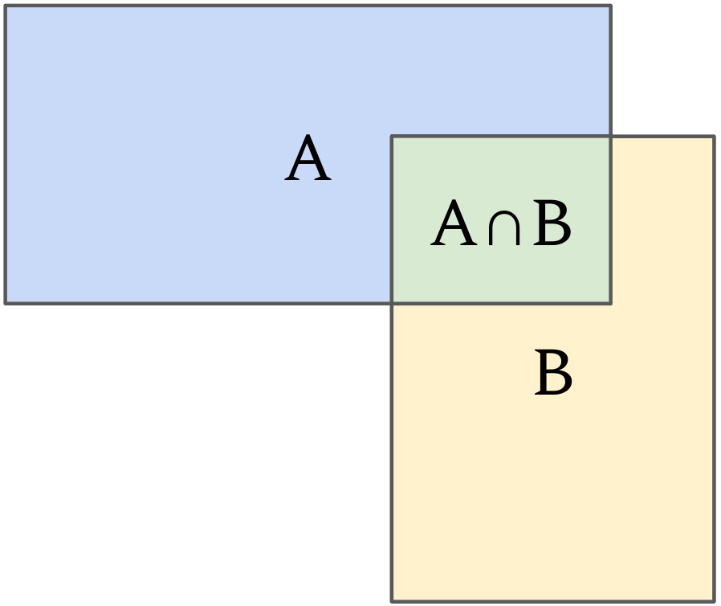

Entropi, Bayes og dimensjonsforbannelsen
Tre ideer fra sannsynlighetsteorien som forklarer mye av maskinlæring: hvorfor tapsfunksjonen ser ut som den gjør (entropi), hva en klassifikator egentlig prøver å regne ut (Bayes), og hvorfor vi ikke bare kan regne det ut direkte (dimensjonsforbannelsen).
Etter dette kapittelet skal du kunne
- forklare entropi som forventet overraskelse og regne ut $H(p)$ for enkle fordelinger
- forklare kryss-entropi $H(p,q)$, hvem som er $p$ og $q$, og koble den til tapsfunksjonen fra kapittel 2
- utlede Bayes' teorem og forklare prior, likelihood, evidens og posterior
- forklare hvorfor $p(x)$ kan droppes, og hvorfor vi likevel ikke kan regne ut posterior eksakt
- bruke naiv Bayes for hånd, og forklare antakelsen om betinget uavhengighet og hva den koster
- regne ut hvor mange datapunkter som trengs i $d$ dimensjoner og hvor stor andel av volumet som ligger i et tynt skall
4.1Entropi: hvor overrasket blir du?
Tenk deg at en venn forteller deg hva som skjedde i dag. «Sola sto opp» gir deg ingen ny informasjon, det visste du. «Jeg vant i Lotto» er svært overraskende og forteller deg mye. Informasjonsteorien gjør denne intuisjonen presis: jo mindre sannsynlig en hendelse er, jo mer informasjon (overraskelse) bærer den.
Overraskelsen ved et utfall $x$ med sannsynlighet $p(x)$ defineres som
- $p(x) = 1$ gir overraskelse $\log 1 = 0$. Det sikre forteller oss ingenting.
- $p(x) \to 0$ gir overraskelse $\to \infty$. Det nesten umulige er enormt overraskende.
- To uavhengige hendelser har sannsynlighet $p_1 p_2$, og overraskelsen blir $-\log(p_1p_2) = -\log p_1 - \log p_2$. Overraskelser adderes. Det er derfor logaritmen er det naturlige valget.
Entropi (Shannon-entropi) er den forventede overraskelsen, altså gjennomsnittlig overraskelse når vi trekker fra fordelingen $p$. Den måler usikkerheten, eller hvor mye informasjon det i snitt er i ett utfall:
Likning (28)–(30) i notatene
$$H(X) = \mathbb{E}\left[\log\frac{1}{p(X)}\right] = -\sum_{x} p(x)\log p(x) \qquad\text{eller}\qquad H(p) = -\sum_i p(x_i)\log p(x_i)$$Likning (28) i notatene står som $\mathbb{E}\left[\frac{1}{\log p(X)}\right]$. Det riktige er $\mathbb{E}\left[\log\frac{1}{p(X)}\right]$, altså logaritmen av $1/p$, ikke én delt på logaritmen. Det er dette som gir $-\sum p\log p$ i likning (29).
Eksempler
Vi bruker $\log_2$, så enheten er bit.
- Rettferdig mynt, $p = (0.5,\,0.5)$: $H = -0.5\log_2 0.5 - 0.5\log_2 0.5 = 0.5 + 0.5 = 1$ bit. Ett myntkast gir nøyaktig én bit informasjon.
- Skjev mynt, $p = (0.9,\,0.1)$: $H = -0.9\log_2 0.9 - 0.1\log_2 0.1 = 0.137 + 0.332 \approx 0.47$ bit. Du vet nesten hva som kommer, så usikkerheten er lavere.
- Sikker mynt, $p = (1,\,0)$: $H = 0$ (vi bruker $0\log 0 = 0$). Ingen usikkerhet.
- Terning, seks like utfall: $H = -6\cdot\frac16\log_2\frac16 = \log_2 6 \approx 2.585$ bit. Flere like sannsynlige utfall gir mer usikkerhet.
For to utfall er entropien størst når de er like sannsynlige (1 bit), og null når ett utfall er sikkert. Generelt er entropien størst for en uniform fordeling: med $K$ like utfall er $H = \log_2 K$.
Entropi i bit er (omtrent) hvor mange ja/nei-spørsmål du i snitt må stille for å finne utfallet. Rettferdig mynt: ett spørsmål («kron?»). Fire like utfall: to spørsmål. Sikkert utfall: null spørsmål, du vet svaret allerede.
Med $\log_2$ måles entropi i bit, med $\ln$ i nat. De skiller seg bare med en konstant faktor: $\ln x = \ln 2\cdot\log_2 x \approx 0.693\log_2 x$. Rettferdig mynt har $H = 1$ bit $= \ln 2 \approx 0.693$ nat. Beslutningstrær (kapittel 5) bruker gjerne $\log_2$. Tapsfunksjonen i logistisk regresjon bruker $\ln$. Siden faktoren er konstant, endrer basen aldri hvilket alternativ som har lavest entropi eller tap.
Legg merke til: Begge kurvene er null når $p = 0$ eller $p = 1$ (ren node, ingen usikkerhet) og størst ved $p = 0.5$. Entropien har maks 1 bit, Gini-urenheten $1 - p^2 - (1-p)^2$ har maks 0.5 (for to klasser). Den sjeldne hendelsen har stor overraskelse, men bidrar lite til entropien fordi den sjelden skjer. Gini og entropi brukes begge som splittkriterium i beslutningstrær, se kapittel 5.
Hvilket utfall gir mest informasjon (størst overraskelse) når det inntreffer?
- Et utfall med sannsynlighet 0.5
- Et utfall med sannsynlighet 0.99
- Et utfall med sannsynlighet 0.01
- Alle utfall gir like mye informasjon, det er entropien som varierer
En binær variabel har $P(\text{klasse }1) = p$. For hvilken $p$ er entropien størst, og hva er den da (i bit)?
- $p = 1$, $H = 1$
- $p = 0.5$, $H = 1$
- $p = 0.5$, $H = 0.5$
- $p = 0$, $H = 0$
Regn ut entropien (i bit) til en skjev mynt med $p = (0.9,\;0.1)$. Hint: $\log_2 0.9 \approx -0.152$ og $\log_2 0.1 \approx -3.322$.
Hva er entropien (i bit) til en rettferdig sekssidet terning?
Du regner ut entropien til samme fordeling med $\ln$ i stedet for $\log_2$. Hva skjer?
- Rekkefølgen kan endre seg, så en annen fordeling kan få høyest entropi.
- Entropien blir negativ fordi $\ln$ av tall under 1 er negativt.
- Ingenting, verdien blir nøyaktig den samme.
- Verdien ganges med $\ln 2 \approx 0.693$ (nat i stedet for bit), men sammenligninger blir de samme.
Hvorfor bruker vi akkurat logaritmen for å måle overraskelse? Hva ville gått galt hvis vi bare brukte $1/p$ eller $1-p$?
4.2Kryss-entropi: overraskelsen når du tror feil
Nå har vi to fordelinger. $p$ er virkeligheten: fordelingen observasjonene faktisk kommer fra (alltid!). For Titanic er det fordelingen av targets (Survived). $q$ er det vi tror: fordelingen modellen predikerer. Kryss-entropien er den forventede overraskelsen når utfallene kommer fra $p$, men vi måler overraskelsen med $q$:
Likning (31) i notatene
$$H(p,q) = -\sum_i p(x_i)\log q(x_i)$$Se på hvor $p$ og $q$ står. Vektene i summen (hvor ofte hvert utfall faktisk skjer) kommer fra dataene, $p$. Inne i logaritmen står det vi tror, $q$. Tror modellen at et utfall er usannsynlig (liten $q$) mens det faktisk skjer ofte (stor $p$), blir det et stort bidrag.
$p$ er været som faktisk kommer, $q$ er værmeldingen. Kryss-entropien er hvor overrasket du i snitt blir når du har stolt på værmeldingen. Er værmeldingen perfekt ($q = p$), blir du bare så overrasket som været selv er uforutsigbart: $H(p,q) = H(p)$. Hver feil i værmeldingen gjør overraskelsen større.
Det gjelder alltid at $H(p,q) \ge H(p)$, med likhet bare når $q = p$. Kryss-entropien måler altså forskjellen mellom de to fordelingene (pluss den usikkerheten som uansett ligger i dataene). Å minimere $H(p,q)$ med hensyn på $q$ er å gjøre modellen så lik dataene som mulig.
Regneeksempel: $H(p)$ mot $H(p,q)$
Dataene: $p = (0.8,\,0.2)$. Modellen tror: $q = (0.6,\,0.4)$. Med $\log_2$:
$H(p) = -0.8\log_2 0.8 - 0.2\log_2 0.2 = 0.258 + 0.464 = 0.722$ bit.
$H(p,q) = -0.8\log_2 0.6 - 0.2\log_2 0.4 = 0.8\cdot 0.737 + 0.2\cdot 1.322 = 0.590 + 0.264 = 0.854$ bit.
Forskjellen, $0.854 - 0.722 = 0.132$ bit, er prisen for å tro feil. (Den kalles KL-divergensen, se fordypningen under.)
Regn ut $H(p,q)$ i bit for $p = (0.8,\,0.2)$ og $q = (0.6,\,0.4)$ uten å se på løsningen over. Hint: $\log_2 0.6 \approx -0.737$, $\log_2 0.4 \approx -1.322$.
Koblingen til tapsfunksjonen
Sammenlign med tapsfunksjonen for logistisk regresjon fra kapittel 2 (likning 10). For ett datapunkt er den «sanne fordelingen» $p = (y,\;1-y)$, altså enten $(1,0)$ eller $(0,1)$. Modellens fordeling er $q = (\hat y,\;1-\hat y)$. Setter vi inn i $H(p,q)$ med $\ln$:
Det er nøyaktig binær cross-entropy! Tapsfunksjonen måler altså forskjellen mellom fordelingen av labels i datasettet og fordelingen modellen predikerer. Vi trener modellen ved å gjøre den forskjellen minst mulig. Navnet «cross-entropy loss» kommer herfra.
Flere klasser
Med $K$ klasser generaliserer det samme uttrykket til (likning 32 i notatene)
der $y$ er one-hot-kodet: en vektor med 1 for riktig klasse og 0 ellers. Da er alle ledd null unntatt det for den riktige klassen, og tapet blir rett og slett $-\log$ av sannsynligheten modellen ga den riktige klassen.
Regneeksempel: tre klasser
Et bilde er en katt. Klassene er (hund, katt, fugl), så $y = (0,\,1,\,0)$. Modellen gir $\hat y = (0.2,\,0.7,\,0.1)$.
$L = -(0\cdot\ln 0.2 + 1\cdot\ln 0.7 + 0\cdot\ln 0.1) = -\ln 0.7 \approx 0.357$.
Hadde modellen gitt katt bare 0.2, ville tapet vært $-\ln 0.2 \approx 1.61$. Hvordan sannsynligheten fordeler seg på de gale klassene, spiller ingen direkte rolle.
Klassene er (rød, grønn, blå), riktig klasse er blå, og modellen gir $\hat y = (0.1,\,0.2,\,0.7)$. Hva er cross-entropy-tapet (naturlig logaritme)?
I kryss-entropien $H(p,q) = -\sum_i p(x_i)\log q(x_i)$ brukt som tapsfunksjon, hva er $p$ og $q$?
- $p$ er modellens prediksjoner, $q$ er labels i datasettet
- $p$ er fordelingen av labels i dataene, $q$ er modellens predikerte fordeling
- $p$ er prioren og $q$ er posterior
- $p$ og $q$ er to modeller vi sammenligner, og rollene kan byttes fritt
Med one-hot-kodede labels og $K = 10$ klasser: hvor mange ledd i $-\sum_i y_i\log\hat y_i$ bidrar til tapet for ett datapunkt?
- Ett, leddet for den riktige klassen
- Ni, leddene for de gale klassene
- Alle ti
- Ingen, fordi one-hot-vektorer summerer til 1
Hvilke utsagn om kryss-entropien $H(p,q)$ er riktige?
- $H(p,q) \ge H(p)$, med likhet når $q = p$.
- $H(p,q)$ er alltid lik $H(q,p)$.
- Binær cross-entropy er $H(p,q)$ med $p = (y, 1-y)$ og $q = (\hat y, 1-\hat y)$.
- Kryss-entropien kan bli negativ hvis modellen er veldig god.
Fordypning: KL-divergens kommer igjen i t-SNE
Forskjellen mellom kryss-entropien og entropien kalles Kullback–Leibler-divergensen:
Den er null bare når $q = p$. Siden $H(p)$ avhenger bare av dataene, er det å minimere kryss-entropien det samme som å minimere KL-divergensen. t-SNE (kapittel 12) minimerer KL-divergensen mellom nabofordelingene i høy og lav dimensjon.
4.3Bayes' teorem
Se på de to overlappende mengdene $A$ og $B$ under. Hvis du trekker et tilfeldig element, hva er sannsynligheten for at det havner i overlappet $A\cap B$?

Du kan regne det ut på to måter. Enten først «havner jeg i $B$?» og deretter «gitt at jeg er i $B$, havner jeg også i $A$?». Eller motsatt. Begge veier gir samme svar:
Utledning av Bayes' teorem steg for steg
Steg 1. Betinget sannsynlighet er andelen av $B$ som også er i $A$: $P(A\mid B) = \dfrac{P(A\cap B)}{P(B)}$. Altså $P(A\cap B) = P(A\mid B)P(B)$.
Steg 2. Samme logikk andre veien: $P(A\cap B) = P(B\mid A)P(A)$.
Steg 3. Overlappet er det samme uansett vei (likning 33):
Steg 4. Del på $P(B)$ (likning 34):
Dette er Bayes' teorem. Det holder uansett om du tolker sannsynlighet frekventistisk eller bayesiansk.
Bayes' teorem for klassifisering
Når vi klassifiserer, vil vi vite sannsynligheten for klasse $C_k$ gitt en observasjon $x$ (f.eks. Survived = 1 gitt en passasjers features). Bytt $A \to C_k$ og $B \to x$ (likning 35):
- Prior $p(C_k)$ (a priori-sannsynlighet): fordelingen av klassene i treningsdataene. Det vi vet før vi ser på datapunktet. Legg merke til at $x$ ikke er med.
- Likelihood $p(x\mid C_k)$: fordelingen av dataene gitt klassen. Én fordeling per klasse, med like mange dimensjoner som det er features.
- Evidens $p(x)$: fordelingen av selve dataene, uavhengig av klasse. Også den har like mange dimensjoner som det er features. $C_k$ er ikke med.
- Posterior $p(C_k\mid x)$: det vi vil ha, sannsynligheten for klassen etter at vi har sett $x$.
Prior er hva detektiven mener før hun har sett åstedet («de fleste innbrudd er gjort av naboer»). Likelihood er hvor godt sporene passer med hver mistenkt («hvor sannsynlig er disse fotsporene hvis det var naboen?»). Posterior er den oppdaterte mistanken. Evidensen er bare skalaen som sørger for at mistankene summerer til 100 %.
Hvorfor kan vi droppe $p(x)$?
$p(x)$ inneholder ikke $C_k$, så den er den samme for alle klasser. Den skalerer alle posteriorene med samme tall. Den er en normalisering som sørger for at posteriorene summerer til 1. Med loven om total sannsynlighet er den nemlig
Vil vi bare vite hvilken klasse som er mest sannsynlig, kan vi droppe den (likning 36):
Spørsmål: hva er hensikten med leddet $p(x)$ i $p(C=1\mid x) = \frac{p(C=1)p(x\mid C=1)}{p(x)}$? Riktig svar: det sikrer at posterior-sannsynlighetene over alle klasser utgjør en gyldig sannsynlighetsfordeling. Det avhenger ikke av klassen, det er ikke $p(x\mid C=1)$, og det bestemmer ikke hvilken klasse som vinner (det er likt for alle).
I Bayes' teorem $p(C_k\mid x) = \frac{p(x\mid C_k)p(C_k)}{p(x)}$: hvorfor kan vi ignorere $p(x)$ når vi bare skal velge den mest sannsynlige klassen?
- Fordi $p(x)$ alltid er lik 1 for observerte data.
- Fordi $p(x)$ er lik prioren for den største klassen.
- Fordi $p(x)$ er den samme for alle klasser, så den skalerer alle posteriorer likt og endrer ikke rekkefølgen.
- Fordi $p(x)$ bestemmer hvilken klasse som vinner, og den vinneren vet vi allerede.
Hvilke koblinger er riktige for $p(C_k\mid x) = \frac{p(x\mid C_k)p(C_k)}{p(x)}$?
- $p(C_k)$ er prior: klassefordelingen i treningsdataene, uten å se på $x$.
- $p(x\mid C_k)$ er posterior: det vi vil finne.
- $p(x)$ er evidens: fordelingen av dataene uavhengig av klasse.
- $p(x\mid C_k)$ er likelihood: én fordeling over alle features for hver klasse.
- $p(C_k\mid x)$ er prior, fordi den kommer først i likningen.
Sykdomstesten: Bayes' viktigste lærdom
En test for en sjelden sykdom er 95 % sensitiv (finner 95 % av de syke) og 95 % spesifikk (gir negativt svar til 95 % av de friske). 1 % av befolkningen har sykdommen. Du tester positivt. Hvor sannsynlig er det at du er syk?
De fleste gjetter 95 %. Svaret er 16 %. Prøv selv:
Hver prikk er én av 1000 personer. Tallene under er per 10 000 for å få mindre avrunding.
Regn det ut med Bayes og med naturlige frekvenser
Naturlige frekvenser. Tenk 10 000 personer. 1 % er syke: 100 syke og 9900 friske.
- Av de 100 syke tester 95 % positivt: TP = 95.
- Av de 9900 friske tester 5 % positivt: FP = 495.
Positive tester totalt: $95 + 495 = 590$. Andelen som faktisk er syke: $95/590 \approx 0.161$.
Med Bayes' teorem.
Nevneren er $p(x)$, regnet ut med loven om total sannsynlighet.
Når sykdommen er sjelden, er det så mange flere friske enn syke at selv en liten falsk positiv-rate gir flere falske alarmer enn ekte funn. En positiv test på en sjelden sykdom er ofte falsk alarm. Dette er nøyaktig det samme som i kapittel 3: precision (som her er $P(\text{syk}\mid +)$) avhenger av klassefordelingen, mens sensitivitet og spesifisitet ikke gjør det. Prioren er det som gjør ubalanserte data vanskelige.
Sjelden sykdom → mest falske alarmer. Se for deg en stadion med 10 000 mennesker. 100 er syke, og testen finner 95 av dem. Men den slår også ut på 495 av de friske. Står du blant de 590 som fikk positivt svar, er de fleste rundt deg friske.
Uten å se på løsningen: andel syke 1 %, sensitivitet 95 %, spesifisitet 95 %. Hva er $P(\text{syk}\mid\text{positiv test})$?
En enda bedre test: sensitivitet 99 % og spesifisitet 99 %, men sykdommen rammer bare 1 av 1000 (0.1 %). Hva er $P(\text{syk}\mid +)$?
En test for en sjelden sykdom har høy sensitivitet og høy spesifisitet. Hvorfor kan likevel de fleste positive testene være falske alarmer?
- Fordi høy sensitivitet alltid gir mange falske positive.
- Fordi det er så mange flere friske enn syke at en liten andel falske positive blant de friske blir flere enn de sanne positive.
- Fordi spesifisitet og sensitivitet ikke kan være høye samtidig.
- Fordi Bayes' teorem bare gjelder når klassene er balanserte.
Hvorfor regner vi ikke bare ut posterior eksakt?
Bayes' teorem er et eksakt uttrykk for $p(C_k\mid x)$. Klarer vi å regne ut alle leddene, trenger vi ingen maskinlæring. Så hvorfor gjør vi det ikke? Se på hvert ledd for Titanic-dataene:
- $p(C_k)$ kan beregnes: antall Survived = 1 (og = 0) delt på antall passasjerer. Overlever 38 %, er $p(C_1) = 0.38$.
- $p(x)$ er problematisk: vi trenger fordelingen av alle kombinasjoner av alle features, og det er ikke sikkert den har et analytisk uttrykk. Men vi kan droppe den, se over.
- $p(x\mid C_k)$ er også problematisk: så lenge featurene avhenger av hverandre, er dette en flerdimensjonal simultanfordeling (joint distribution). Den er like vanskelig å estimere som $p(x)$, og vi kan ikke droppe den.
Problemet er altså likelihooden. Med mange features er det for mange kombinasjoner til at vi har data nok til å telle opp hver av dem. Det er dimensjonsforbannelsen (4.6). Maskinlæringsmodeller er i stor grad måter å tilnærme $p(C_k\mid x)$ uten å måtte estimere hele simultanfordelingen.
Hvilket ledd i Bayes' teorem er det egentlige hinderet for å regne ut posterior eksakt i et klassifiseringsproblem med mange features?
- Prioren $p(C_k)$, fordi klassefordelingen er ukjent.
- Likelihooden $p(x\mid C_k)$, fordi den er en høydimensjonal simultanfordeling som krever enorme mengder data å estimere, og den kan ikke droppes.
- Evidensen $p(x)$, fordi den må regnes ut for å finne den beste klassen.
- Posterior, fordi den alltid er 0 eller 1.
Prosjekt 2 spurte: «Try estimating the factors of Bayes theorem using this dataset. What terms can you estimate and which ones are difficult and why?» Svaret er avsnittet over, med viking-dataene: prioren $P(\text{survived})$ er lett (222 av 500 overlevde, altså 0.444). Én-dimensjonale likelihooder som $P(\text{sex}=\text{Male}\mid\text{survived})$ er lette å telle opp. Den fulle likelihooden $P(\text{sex},\text{age},\text{role},\text{ship},\ldots\mid\text{survived})$ og evidensen $P(x)$ er vanskelige: med ti features er det langt flere kombinasjoner enn 500 vikinger, så de fleste cellene er tomme. Derfor naiv Bayes (neste seksjon).
Forklar med egne ord, slik du ville gjort i prosjekt 2: hvilke ledd i Bayes' teorem kan du estimere fra et datasett med 500 rader og 10 features, og hvilke er vanskelige?
4.4Naiv Bayes
Løsningen som «noen ganger fungerer i praksis» er å anta at featurene er uavhengige gitt klassen (betinget uavhengighet). For eksempel at det å være kvinne eller mann ikke sier noe om alderen, innenfor hver klasse. Da kan simultanfordelingen skrives som et produkt av én-dimensjonale fordelinger:
Sammen med $p(C_k\mid x)\propto p(x\mid C_k)p(C_k)$ gir det (likning 37 og 38 i notatene):
Naiv Bayes: estimat og prediksjon
$$p(C_k\mid x)\;\propto\; p(C_k)\prod_{i=1}^n p(x_i\mid C_k) \qquad\qquad \hat y = \arg\max_{k}\; p(C_k)\prod_{i=1}^n p(x_i\mid C_k)$$Det kalles naiv Bayes fordi det er naivt å tro at featurene er uavhengige (selv om det i noen tilfeller kan stemme). $\arg\max_k$ betyr «den $k$ som gir størst verdi»: vi regner ut produktet for hver klasse og velger klassen med størst produkt.
Med 10 features som hver har 10 mulige verdier, har simultanfordelingen $10^{10}$ celler per klasse. Med naiv Bayes estimerer vi i stedet 10 fordelinger med 10 verdier hver, altså $10\cdot 10 = 100$ tall per klasse. Naiv Bayes bytter $10^d$ mot $10\cdot d$. Det er en direkte måte å unnslippe dimensjonsforbannelsen på, med en antakelse som pris.
Regneeksempel: overlever vikingen?
Inspirert av prosjekt 2. Vi har et lite (oppdiktet) datasett med 20 vikinger fra tidligere tokt, med tre features: kjønn, rolle og rustning. 8 overlevde ($C_1$) og 12 døde ($C_0$). Tellingene:
| Overlevde ($C_1$, 8 stk.) | Antall |
|---|---|
| Kjønn: mann / kvinne | 4 / 4 |
| Rolle: jarl / hirdmann / karl / træl | 1 / 3 / 3 / 1 |
| Rustning: ringbrynje / ingen | 4 / 4 |
| Døde ($C_0$, 12 stk.) | Antall |
|---|---|
| Kjønn: mann / kvinne | 9 / 3 |
| Rolle: jarl / hirdmann / karl / træl | 0 / 2 / 6 / 4 |
| Rustning: ringbrynje / ingen | 2 / 10 |
En ny viking, Endre, skal på tokt: mann, hirdmann, ringbrynje. Overlever han?
Naiv Bayes for Endre, steg for steg
Steg 1: prior. $p(C_1) = 8/20 = 0.4$ og $p(C_0) = 12/20 = 0.6$.
Steg 2: likelihood for hver feature, talt opp innenfor hver klasse:
| Overlevde $C_1$ | Døde $C_0$ | |
|---|---|---|
| $p(\text{mann}\mid C)$ | $4/8 = 0.5$ | $9/12 = 0.75$ |
| $p(\text{hirdmann}\mid C)$ | $3/8 = 0.375$ | $2/12 \approx 0.167$ |
| $p(\text{ringbrynje}\mid C)$ | $4/8 = 0.5$ | $2/12 \approx 0.167$ |
Steg 3: multipliser prior og likelihoodene:
$C_1$: $\;0.4\cdot 0.5\cdot 0.375\cdot 0.5 = 0.0375$
$C_0$: $\;0.6\cdot 0.75\cdot \tfrac{2}{12}\cdot \tfrac{2}{12} = 0.6\cdot 0.75\cdot\tfrac{1}{36} = 0.0125$
Steg 4: arg max. $0.0375 > 0.0125$, så $\hat y = C_1$: Endre forventes å overleve. Han har tre ganger så høy skår for å overleve som for å dø.
Steg 5 (valgfritt): normaliser. Summen $0.0375 + 0.0125 = 0.05$ spiller rollen som $p(x)$. Normalisert: $0.0375/0.05 = 0.75$ for å overleve og $0.25$ for å dø.
De 75 % er ikke en ekte posterior. Uavhengighetsantakelsen er (nesten) aldri helt riktig: en hirdmann har nok oftere ringbrynje enn en træl, så de to featurene teller «samme bevis» to ganger. Naiv Bayes blir derfor ofte for sikker. Men så lenge vi bare vil vite hvilken klasse som er mest sannsynlig, og beregner begge på samme måte, fungerer det ofte godt. Sammenligningen er nyttig, selve tallet må tas med en klype salt.
Regn ut den unormaliserte naiv Bayes-skåren for «overlevde» for en kvinne, karl, ringbrynje. (Bruk tabellene over.)
En mann, karl, uten rustning. Hva blir den normaliserte naiv Bayes-sannsynligheten for å overleve?
Legg merke til: Velg rolle jarl. Ingen jarl i datasettet døde, så $p(\text{jarl}\mid C_0) = 0/12 = 0$, og hele produktet for $C_0$ blir 0, uansett hva de andre featurene sier. Én tom celle overstyrer alt annet bevis. Skru på Laplace-glatting for å se hvordan det fikses (se fordypningen under).
I naiv Bayes-eksempelet har ingen jarl dødd ($0/12$). Hva skjer når vi klassifiserer en jarl, uansett øvrige features?
- Jarlen får posterior 0.5, fordi vi mangler informasjon.
- Rolle-featuren ignoreres automatisk for jarler.
- Produktet for «døde» blir 0, så modellen sier «overlever» med full sikkerhet.
- Modellen kan ikke regne ut noe, fordi man ikke kan dele på 0.
Fordypning: Laplace-glatting og kontinuerlige features nyttig i praksis
Laplace-glatting legger til 1 i hver telling: $p(x_i = v\mid C_k) = \dfrac{n(v, C_k) + 1}{n(C_k) + V}$, der $V$ er antall mulige verdier for featuren. Da blir ingen sannsynlighet 0. For jarl blant de døde: $(0+1)/(12+4) = 1/16$.
Kontinuerlige features som alder kan deles inn i intervaller (bins) og telles som kategorier, eller modelleres med en normalfordeling per klasse (gaussisk naiv Bayes), der vi bare estimerer gjennomsnitt og standardavvik for hver klasse.
En naiv Bayes-klassifikator for e-post med features «antall ganger "offer"», «antall ganger "free"» og «antall lenker», med $p(x_1,x_2,x_3\mid\text{spam}) = p(x_1\mid\text{spam})p(x_2\mid\text{spam})p(x_3\mid\text{spam})$. Riktig utsagn: modellen antar betinget uavhengighet selv om den sanne datafordelingen bryter denne antakelsen. Featurene trenger ikke være uavhengige i det faktiske datasettet for at modellen skal kunne brukes, antakelsen gjelder ikke bare numeriske features, og posterior kan alltid beregnes.
En naiv Bayes-modell skal oppdage svindel ut fra beløp, tidspunkt og land. Beløp og land er tydelig korrelert i dataene. Hvilket utsagn er riktig?
- Modellen kan ikke brukes, fordi featurene må være statistisk uavhengige i datasettet.
- Modellen oppdager korrelasjonen og estimerer simultanfordelingen for beløp og land i stedet.
- Uavhengighetsantakelsen gjelder bare kategoriske features, så korrelasjonen med beløp spiller ingen rolle.
- Modellen antar betinget uavhengighet uansett. Den kan fortsatt brukes, men sannsynlighetene blir mindre pålitelige.
Naiv Bayes gir «0.97» for at en e-post er spam. Hvordan bør du tolke tallet?
- Som en eksakt posterior: 97 av 100 slike e-poster er spam.
- Som en rangering: modellen mener spam er mye mer sannsynlig enn ikke-spam, men 0.97 er ikke en kalibrert sannsynlighet.
- Som accuracy: modellen har rett 97 % av gangene.
- Som prioren for spam i treningsdataene.
Naiv Bayes bygger på en antakelse vi vet er feil. Hvorfor kan den likevel klassifisere godt?
4.5Ikke-uavhengige features
Notatenes oppgave: hvilke features i Titanic-dataene er ikke uavhengige? I forelesningen plottet vi passasjerklasse mot kjønn:
p_cond = pd.crosstab(df.Pclass, df.Sex, normalize="index")
p_marg = df.Sex.value_counts(normalize=True)
ax = p_cond.plot.bar(rot=0)Fra Titanic-treningsdataene (891 passasjerer):
| Pclass | Kvinner | Menn | Andel kvinner |
|---|---|---|---|
| 1. klasse | 94 | 122 | 0.44 |
| 2. klasse | 76 | 108 | 0.41 |
| 3. klasse | 144 | 347 | 0.29 |
| Alle | 314 | 577 | 0.35 |
Hvis Pclass og Sex var uavhengige, ville andelen kvinner vært den samme (ca. 0.35) i hver klasse: $p(\text{Sex}\mid\text{Pclass}) = p(\text{Sex})$. Det er den ikke. I 3. klasse er det langt flere menn. Kjenner du klassen, vet du noe om kjønnet. Featurene er avhengige. Også Pclass og billettpris (Fare) henger åpenbart sammen, og det samme gjør antall søsken/ektefeller og antall foreldre/barn om bord.
I viking-dataene fra prosjekt 2 er rolle og rustning et enda tydeligere eksempel: ingen træl eller karl har ringbrynje, mens de fleste jarler har det.
Naiv Bayes ganger sammen $p(\text{Pclass}\mid C)$ og $p(\text{Sex}\mid C)$ som om de var uavhengige bevis. Men delvis forteller de det samme («3. klasse» bærer allerede litt «mann» i seg), så beviset telles dobbelt. Resultatet er for selvsikre sannsynligheter og noen ganger feil klasse.
Andelen kvinner er 0.44 i 1. klasse og 0.29 i 3. klasse, mens den er 0.35 totalt. Hva viser dette?
- At Sex og Pclass er uavhengige, siden alle klassene har både kvinner og menn.
- At Sex og Pclass er avhengige, siden $p(\text{Sex}\mid\text{Pclass})$ varierer med klassen og ikke er lik $p(\text{Sex})$.
- At Sex forårsaker hvilken klasse man reiser på.
- At naiv Bayes vil gi nøyaktig riktige sannsynligheter for Titanic.
Estimere simultanfordelingen direkte
Hva om vi dropper uavhengighetsantakelsen? Da må vi estimere simultanfordelingen av alle features for hver klasse, altså $p(\text{Sex}, \text{Age}, \text{Pclass}\mid \text{Survived} = 0)$ og tilsvarende for Survived = 1, og sammenligne (likning 41)
Den beste måten er en tabell der hver verdi av $x_1$ kombineres med hver verdi av $x_2$ og $x_3$ (rekkefølgen spiller ingen rolle). Kontinuerlige features som Age deles inn i for eksempel ti kategorier med numpy.histogram(data[feature], bins=10). For Titanic gir det $2\cdot 10\cdot 3 = 60$ celler per klasse.
For vikingeksempelet med kjønn (2), rolle (4) og rustning (2) blir det $2\cdot 4\cdot 2 = 16$ celler per klasse. Men vi har bare 8 overlevende og 12 døde! Minst halvparten av cellene for de overlevende er tomme. Endres celle (mann, hirdmann, ringbrynje) inneholder 2 overlevende og 1 død. Merk at $p(x\mid C_k)p(C_k) = \frac{n(x, C_k)}{n(C_k)}\cdot\frac{n(C_k)}{N} = \frac{n(x, C_k)}{N}$, så vi sammenligner rett og slett tellingene: 2 mot 1. Normalisert gir det $2/3 \approx 0.67$ for å overleve, basert på tre vikinger. Estimatet bruker riktig modell, men har nesten ingen data bak seg.
Tomme celler i tabellen er dimensjonsforbannelsen i miniatyr. Hver ny feature ganger antall celler, mens antall datapunkter står stille. Det er notatenes overgang til neste tema.
Du estimerer simultanfordelingen av tre features med 3, 4 og 5 mulige verdier, separat for hver av to klasser. Klasse 1 har 50 datapunkter. Hva er det minste antallet tomme celler for klasse 1?
- 0, siden 50 datapunkter er nok
- 12
- 10
- 60
4.6Dimensjonsforbannelsen
Notatenes tankeeksperiment: vi vil estimere en fordeling med et histogram. Vi synes 10 bins per akse (feature) er nok oppløsning, og vi vil ha 10 datapunkter i hver bin for at tellingen skal være noenlunde pålitelig. Hvor mange datapunkter trenger vi for $d$ features? Tenk deg om før du leser videre.
Antall bins er $10^d$, og med 10 punkter i hver bin trenger vi
For tre features er det $10^4 = 10\,000$ punkter, som er overkommelig. Men se hva som skjer videre (tabell 5 i notatene):
| Dimensjoner $d$ | Bins | Datapunkter | Til sammenligning |
|---|---|---|---|
| 1 | $10$ | $10^2$ | ett regneark |
| 3 | $10^3$ | $10^4$ | overkommelig |
| 10 | $10^{10}$ | $10^{11}$ | over 10 ganger så mange som det finnes mennesker |
| 784 (MNIST) | $10^{784}$ | $10^{785}$ | det finnes ~$10^{82}$ atomer i universet |
MNIST er et mye brukt datasett med håndskrevne sifre på $28\times 28 = 784$ piksler, så hvert bilde er et punkt i 784 dimensjoner. Datasettet har 70 000 bilder. Det er $7\cdot 10^4$, mot de $10^{785}$ histogrammet ville trengt.
Hver ny feature ganger datakravet med 10. Data vokser lineært (du samler inn litt til), mens rommet vokser eksponentielt. Rommet vinner alltid.
Med 10 bins per feature og krav om 10 datapunkter per bin: hvor mange datapunkter trengs for 5 features?
- $500$
- $10^5$
- $5^{10}$
- $10^6$
Hvor mange datapunkter trengs for $d = 4$ features (10 bins per akse, 10 punkter per bin)?
Nesten alt volumet ligger ved overflaten
Notatenes andre oppgave: hvor stor andel av en $d$-dimensjonal kule ligger i et tynt skall med tykkelse $\epsilon$ ytterst?
Utledning steg for steg
Steg 1. Volumet av en kule med radius $r$ i 3D er $\frac43\pi r^3$. I $d$ dimensjoner er det $V_d(r) = K_d\,r^d$, der $K_d$ er en konstant som bare avhenger av $d$.
Steg 2. Velg $r = 1$ (enhetskule, notatenes hint). Hele kula har volum $K_d\cdot 1^d = K_d$.
Steg 3. Den indre kula, uten skallet, har radius $1-\epsilon$ og volum $K_d(1-\epsilon)^d$.
Steg 4. Skallet er differansen. Andelen i skallet er
Prefaktoren $K_d$ forkortes bort, så vi trenger aldri å vite den. (Samme resultat får du for en kube med halv sidelengde 1, fordi volumet også der skalerer som $r^d$.)
Steg 5. Siden $0 \lt 1-\epsilon \lt 1$, går $(1-\epsilon)^d \to 0$ når $d$ vokser, og andelen i skallet går mot 1. En nyttig tilnærming for liten $\epsilon$ er $(1-\epsilon)^d \approx e^{-\epsilon d}$.
| $d$ | $\epsilon = 0.01$ | $\epsilon = 0.05$ | $\epsilon = 0.1$ |
|---|---|---|---|
| 1 | 0.01 | 0.05 | 0.10 |
| 3 | 0.030 | 0.143 | 0.271 |
| 10 | 0.096 | 0.401 | 0.651 |
| 100 | 0.634 | 0.994 | 0.99997 |
| 784 | 0.9996 | ≈ 1 | ≈ 1 |
Et skall som er bare 1 % av radien tykt, inneholder 63 % av volumet i 100 dimensjoner og 99.96 % i 784. I høye dimensjoner er en kule nesten hul: nesten alt volumet, og dermed nesten alle jevnt fordelte datapunkter, ligger helt ytterst.
Hvor stor andel av volumet i en 100-dimensjonal enhetskule ligger i det ytterste skallet med tykkelse $\epsilon = 0.01$? Hint: $0.99^{100} \approx 0.366$.
Hva skjer med andelen $1-(1-\epsilon)^d$ av volumet i et tynt skall når $d$ blir veldig stor (og $\epsilon$ holdes fast)?
- Den går mot $\epsilon$, fordi skallet er like tynt uansett dimensjon.
- Den går mot 1, så nesten alt volumet ligger i skallet.
- Den går mot 0, fordi skallet blir relativt tynnere.
- Den går mot 0.5, fordi halve volumet alltid ligger ytterst.
Legg merke til:
- Datakravet $10^{d+1}$ passerer antall atomer i universet allerede ved $d = 82$.
- Skallandelen skyter mot 1 når $d$ øker, raskere jo tykkere skallet er.
- Avstandene i høyre plott klumper seg rundt 1 når $d$ øker. I 1D er nærmeste nabo mye nærmere enn den fjerneste. I 784 dimensjoner er nærmeste og fjerneste nabo nesten like langt unna. «Nær» og «fjern» mister mening.
Hva betyr dette for maskinlæring?
- Rommet er tomt. Med et realistisk antall datapunkter er nesten alle «celler» i et høydimensjonalt rom tomme. Vi kan ikke estimere fordelinger ved å telle, som vi så med simultanfordelingen i 4.5.
- Vi trenger enormt mye data, eller modeller med sterke antakelser (induktiv bias) som klarer seg med lite: naiv Bayes (uavhengighet), lineære modeller (linearitet), nevrale nett (glatthet og struktur).
- Avstander blir like. Metoder som bygger på avstand, som k-means, DBSCAN og k-nærmeste-nabo, får problemer når alle punkter er omtrent like langt fra hverandre. Se kapittel 11.
- Alt ligger «ytterst». Når nesten alt volumet er ved overflaten, ligger de fleste punktene langt fra sentrum, og intuisjonen fra 2D og 3D svikter.
- Mottiltak: færre features (feature selection), dimensjonsreduksjon som PCA (kapittel 12), og modeller med antakelser som utnytter strukturen i dataene. Ekte data ligger dessuten ofte nær en mye lavere-dimensjonal flate (et MNIST-siffer er ikke en tilfeldig pikselkombinasjon), og det er derfor ML fungerer i praksis.
Hvilke er konsekvenser av dimensjonsforbannelsen?
- Antall datapunkter som trengs for å dekke rommet vokser eksponentielt med antall features.
- Avstanden til nærmeste og fjerneste nabo blir omtrent like stor, så avstandsbaserte metoder svekkes.
- Modeller blir automatisk bedre med flere features, fordi de får mer informasjon.
- Det meste av volumet i en høydimensjonal kule ligger nær overflaten.
- Gradient descent slutter å fungere når $d > 3$.
Hvordan unngår naiv Bayes det verste av dimensjonsforbannelsen når den estimerer $p(x\mid C_k)$ med 10 bins per feature og $d$ features?
- Den bruker færre bins når $d$ er stor.
- Den dropper $p(x\mid C_k)$ fordi den er lik for alle klasser.
- Ved å anta betinget uavhengighet trenger den bare $d$ én-dimensjonale histogrammer, altså $10\cdot d$ bins per klasse i stedet for $10^d$.
- Den velger automatisk ut de viktigste featurene.
Du har 1000 pasienter og vil legge til 500 nye genmarkører som features i en modell som bruker avstand mellom pasienter (f.eks. k-nærmeste-nabo). Hva tror du skjer, og hva ville du gjort?
4.7Oppsummering
Kjernepunkter
- Overraskelse $= -\log p(x)$. Entropi $H(p) = -\sum p\log p$ er forventet overraskelse: maks for uniform fordeling ($\log_2 K$), 0 for et sikkert utfall. Rettferdig mynt: 1 bit.
- $\log_2$ gir bit, $\ln$ gir nat. Forskjellen er en konstant faktor, så sammenligninger påvirkes ikke.
- Kryss-entropi $H(p,q) = -\sum p\log q$: $p$ = dataene (utenfor log), $q$ = modellen (inne i log). $H(p,q)\ge H(p)$, likhet når $q=p$. BCE er $H(p,q)$ med $p=(y,1-y)$, $q=(\hat y,1-\hat y)$. Multiklasse med one-hot: $-\log\hat y_{\text{riktig}}$.
- Bayes: $p(C_k\mid x) = \frac{p(x\mid C_k)p(C_k)}{p(x)}$. Posterior = likelihood · prior / evidens.
- $p(x)$ er en normalisering, lik for alle klasser, så den kan droppes: $p(C_k\mid x)\propto p(x\mid C_k)p(C_k)$.
- Prioren er lett å estimere. Likelihooden er en høydimensjonal simultanfordeling og er det egentlige problemet.
- Sjelden sykdom: selv en god test gir mest falske alarmer, fordi prioren er liten.
- Naiv Bayes: anta betinget uavhengighet, $\hat y = \arg\max_k p(C_k)\prod_i p(x_i\mid C_k)$. Modellen antar det selv om dataene bryter det. Sannsynlighetene er ikke kalibrerte. En nulltelling gjør hele produktet 0.
- Avhengige features (Pclass og Sex) gjør naiv Bayes for sikker. Å estimere simultanfordelingen gir mange tomme celler.
- Dimensjonsforbannelsen: 10 bins og 10 punkter per bin krever $10^{d+1}$ punkter. Skallandel $1-(1-\epsilon)^d \to 1$. Rommet blir tomt, avstander blir like.